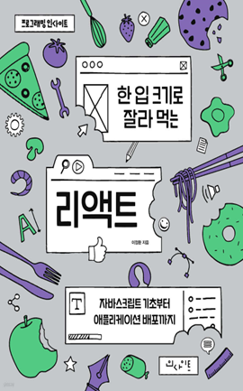

학습 목표
- 1. 리액트의 기본 원리를 쉽게 이해할 수 있다.
- 2. 프론트엔드 업무를 수행하는 개발자에게 필요한 리액트 기본기를 다질 수 있다.
교육 특징
-
1. 입문자도 부담 없이 따라올 수 있는 쉽고 친절한 강의 방식
기존 리액트 강의나 책보다 더 친절하고 상세한 설명을 제공하여, 마치 과외를 받는 듯한 학습 경험 제공
-
2. 단순한 문법 학습이 아닌 실무 중심의 사고력 향상
실무에서 마주칠 수 있는 다양한 시나리오를 반영하여, 왜 특정 방식으로 코드를 작성하는지에 대한 명확한 이유 제시
-
3. 실무에서 자주 활용되는 필수 자바스크립트 개념까지 함께 익히는 커리큘럼
리액트뿐만 아니라 프론트엔드 개발 전반에 필요한 핵심 기술을 함께 학습할 수 있어 실무 적용도 높음
교육 대상
- 1. 기업체 전 임직원
- 2. 프론트엔드 기술에 관심있는 개발자
- 3. 리액트를 활용해 프론트엔드 개발을 희망하는 개발자
강의 목차
- 제1장 React를 위한 HTML, CSS
- 제2장 React를 위한 Javascript
- 제3장 React와 컴포넌트
- 제4장 JSX 다루기
- 제5장 컴포넌트 만들기
- 제6장 React Hooks와 Lifecycle
- 제7장 이벤트 다루기
- 제8장 일기장 프로젝트 시작하기
- 제9장 일기장 프로젝트 마무리 및 배포
강사 소개
강사명
유동균
경력
(현) 해치랩스 프론트엔드 개발자
(전) 라인 파이낸셜 프론트엔드 개발자
삼성 SSAFY, 프로그래머스 등 프론트엔드 개발 강의
웹 성능 최적화 프로젝트 및 강의 제작
마이크로소프트웨어 393호(JS 주제), 392호(블록체인 주제) 기고
(전) 라인 파이낸셜 프론트엔드 개발자
삼성 SSAFY, 프로그래머스 등 프론트엔드 개발 강의
웹 성능 최적화 프로젝트 및 강의 제작
마이크로소프트웨어 393호(JS 주제), 392호(블록체인 주제) 기고
참고 도서

도서명
한 입 크기로 잘라 먹는 리액트
저자명
이정환
도서소개
이 책은 웹 개발에서 가장 많이 사용하는 프레임워크인 리액트 사용 방법을 소개합니다. 인프런, 유데미에서
5000여 명이 수강한 베스트 강좌를 책으로 엮었다. 프런트엔드 개발을 희망하는 사람들을 위해 리액트의 기본을 익히고 다양한 앱을 구현하는 데 부족함이
없도록 만들었다.